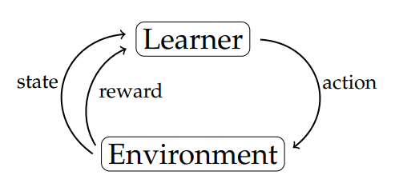

.
RL : Reinforcement Learning
RL is ML type where an agent learns to make decisions by interacting with an environment.
i.e. training agents to make optimal decisions through trial and error.
Key Components
a. agent : decision-making entity that interacts with the environment.
b. environment : Everything the agent interacts with.
c. state : specific situation in which the agent finds itself.
d. action : All possible moves the agent can make.
e. reward : Feedback from the environment based on the action taken.
RL defines how a agent (as a decision-maker) can learn to achieve a goal by interacting with a complex, uncertain environment over time.
At each step, the agent:
1. observes the current state.
2. selects an action based on its policy.
3. receives a reward and transitions to a new state.
4. updates its policy or value estimates based on the experience.

i.e.
• Learner observes input state s₍ᵢ₎
• Learner generates output action a₍ᵢ₎
• Learner observes reward r₍ᵢ₎
• Learner observes input state s₍ᵢ₊₁₎
• Learner generates output action a₍ᵢ₊₁₎
• Learner observes reward r₍ᵢ₊₁₎
Agent's goal to learn an optimal policy that maximizes the reward function